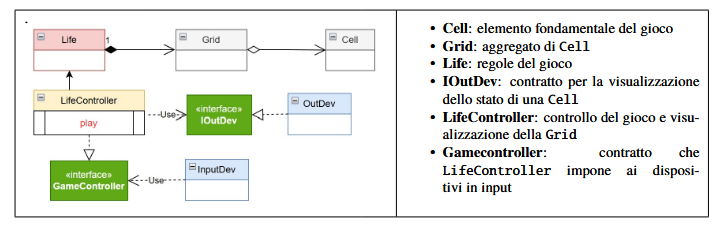

Realizzare una versione in Java del gioco Life di Conway, come gioco zero-player.
Il gioco consiste nell’introdurre una Griglia di Celle il cui stato (cella ‘viva’ o cella ‘morta’)
evolve come stabilito dalle regole di ConwayLife
L’utente umano deve poter:
- specificare la configurazione iniziale della griglia del gioco
- vedere l’evoluzione del gioco in forma opportuna
(si veda Problema della vista del gioco )
- fermare e far ripartire l’evoluzione del gioco
- pulire (a gioco fermo) la configurazione della griglia del gioco
Per lo sviluppo del "Conway's Game of Life", ho adottato un approccio Top-Down focalizzato sulla scomposizione funzionale del sistema, individuando tre entità logiche principali che riflettono il dominio del problema: - Cell: entità atomica che rappresenta l'unità minima di stato del sistema. Incapsula il concetto di "viva" o "morta". - Grid: struttura dati che agisce come un aggregatore di celle, gestendo la topologia della scacchiera e fornendo i metodi per l'accesso spaziale e il calcolo delle adiacenze. - Life: logica di dominio, costituisce il cuore algoritmico del sistema. Implementa le regole di transizione di Conway per determinare l'evoluzione della griglia tra generazioni successive. In un'ottica di estensibilità, ho previsto l'introduzione di un LifeController. Questa entità agirà come intermediario (seguendo il pattern MVC - Model-View-Controller) per orchestrare il flusso dell'esecuzione e gestire gli input dell'utente, garantendo il disaccoppiamento tra la logica del gioco e l'interfaccia di controllo. Per evitare un accoppiamento precoce con specifiche tecnologie o dettagli implementativi, ho optato per una progettazione Interface-Driven. Questo approccio mi permette di fissare il "contratto" del software, ovvero stabilire con precisione il comportamento (il "cosa") di ogni componente prima di affrontarne la realizzazione (il "come"). Inoltre, facilita la futura sostituzione di componenti senza dover modificare le entità che dipendono da esse. Infine, consentire lo sviluppo di Unit Test basati su simulazioni delle interfacce, verificando la correttezza della logica di gioco indipendentemente dall'interfaccia utente. Il seguente diagramma UML permette di rappresentare quanto appena detto:
ICell: package main.java.conway.domain; public interface ICell { public boolean isAlive(); public void setStatus(boolean status); } IGrid: package main.java.conway.domain; public interface IGrid { int getRows(); int getCols(); ICell getCell(int row, int col); int countAliveNeighbors(int row, int col); void clear(); // Utile per il requisito "pulire la configurazione" } LifeInterface: package main.java.conway.domain; public interface LifeInterface { /** Calcola l'evoluzione dello stato alla generazione successiva */ void nextGeneration(); /** Restituisce lo stato di una cella specifica */ boolean isAlive(int row, int col); /** Imposta lo stato di una cella */ void setCell(int row, int col, boolean alive); /** Restituisce il numero di righe e colonne -> metodi ceduti a IGrid */ int getRows(); int getCols(); /** Restituisce una rappresentazione grafica testuale della grglia */ public String gridRep( ); }
Prima di procedere alla stesura del codice sorgente, ho definito un
Piano di Test (Test Plan) granulare per ogni componente. Questo approccio,
ispirato ai principi del Test-Driven Development (TDD), permette di delineare
i criteri di accettazione e il comportamento atteso di ciascuna classe prima
ancora che la logica venga implementata.
Nello specifico, la strategia di testing si articola su due livelli:
- Unit Testing per Cell e Grid: focalizzati sulla verifica delle singole
unità funzionali. Per la Grid, i test verificheranno la corretta gestione dei
confini e l'accuratezza dell'algoritmo di computazione dei vicini, fondamentale
per l'integrità del gioco.
- Logica di Evoluzione in Life: definizione di test basati su configurazioni
statiche e oscillatori noti per validare che l'implementazione delle regole di
Conway produca le transizioni di stato corrette.
TestPlan per Cell:
package main.java.test;
import static org.junit.Assert.assertTrue;
import org.junit.After;
import org.junit.Before;
import org.junit.Test;
import main.java.conway.domain.Cell;
import main.java.conway.domain.ICell;
public class CellTest {
private ICell c;
@Before
public void setup() {
System.out.println("CellTest | setup");
c = new Cell();
}
@After
public void down() {
System.out.println("CellTest | down");
}
@Test
public void TestCellAlive() {
System.out.println("CellTest | doing alive");
c.setStatus(true);
boolean r = c.isAlive();
assertTrue(r);
}
@Test
public void TestCellDead() {
System.out.println("CellTest | doing dead");
c.setStatus(false);
boolean r = c.isAlive();
assertTrue(!r); // oppure assertFalse(r);
}
TestPlan per Grid:
package main.java.test;
import static org.junit.Assert.assertEquals;
import static org.junit.Assert.assertFalse;
import org.junit.After;
import org.junit.Before;
import org.junit.Test;
import main.java.conway.domain.Grid;
import main.java.conway.domain.IGrid;
public class GridTest {
private IGrid g;
private final int ROWS = 5;
private final int COLS = 5;
@Before
public void setup() {
System.out.println("GridTest | setup");
g = new Grid(ROWS, COLS);
}
@After
public void down() {
System.out.println("GridTest | down");
}
@Test
public void testInitialization() {
System.out.println("GridTest | doing initialization");
assertEquals(ROWS, g.getRows());
assertEquals(COLS, g.getCols());
// Verifica che inizialmente siano tutte morte
for (int r = 0; r < ROWS; r++) {
for (int c = 0; c < COLS; c++) {
assertFalse(g.getCell(r, c).isAlive());
}
}
}
@Test
public void testClear() {
System.out.println("GridTest | doing clear");
// Accendo una cella e poi pulisco
g.getCell(1, 1).setStatus(true);
g.clear();
assertFalse(g.getCell(1, 1).isAlive());
}
@Test
public void testCountAliveNeighborsBasic() {
System.out.println("GridTest | doing count alive neighbors BASIC");
/*
Configurazione (al centro):
M V M
M C M
V M V
C = Cella sotto esame (2,2). Vicini vivi attesi: 3
*/
g.getCell(1, 2).setStatus(true);
g.getCell(3, 1).setStatus(true);
g.getCell(3, 3).setStatus(true);
assertEquals(3, g.countAliveNeighbors(2, 2));
}
@Test
public void testCountAliveNeighborsEdges() {
System.out.println("GridTest | doing count alive neighbors EDGES");
// Test agli angoli (0,0)
g.getCell(0, 1).setStatus(true);
g.getCell(1, 0).setStatus(true);
g.getCell(1, 1).setStatus(true);
// La cella 0,0 ha 3 vicini vivi
assertEquals(3, g.countAliveNeighbors(0, 0));
}
}
TestPlan per Life:
package main.java.test;
import static org.junit.Assert.assertEquals;
import static org.junit.Assert.assertFalse;
import static org.junit.Assert.assertTrue;
import org.junit.After;
import org.junit.Before;
import org.junit.Test;
import main.java.conway.domain.Life;
import main.java.conway.domain.LifeInterface;
public class ConwayLifeTest {
@Before
public void setup() {
System.out.println("ConwayLifeTest | setup"); }
@After
public void down() {
System.out.println("ConwayLifeTest | down");
}
//@Test
public void testRule() {
System.out.println("testRule");
}
@Test
public void testOscillaFromFile() throws Exception {
// Carico un Blinker (periodo 2)
System.out.println( "testOscillaFromFile ---------------------" );
boolean[][] initial = PatternLoader.loadFromResource("src/test/resources/blinker.txt", 5, 5);
Life liferules = new Life(initial);
System.out.println( liferules.gridRep() );
System.out.println( "________________________ testOscillaFromFile " );
//
liferules.nextGeneration(); // Generazione 1 (cambia stato)
System.out.println( liferules.gridRep() );
System.out.println( "________________________ testOscillaFromFile " );
liferules.nextGeneration(); // Generazione 2 (deve tornare all'originale)
System.out.println( liferules.gridRep() );
System.out.println( "________________________ testOscillaFromFile " );
//
for (int i=0; i
Project
Testing
Deployment
Maintenance